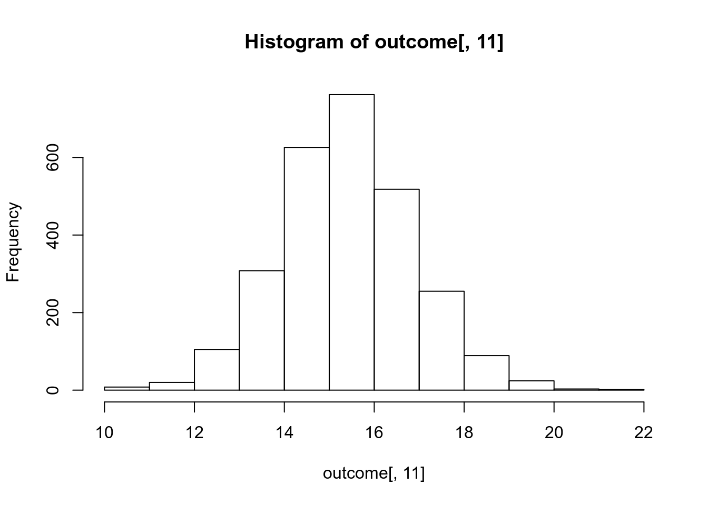

Este trabajo práctico, es el trabajo final de este primer curso de Programación en R.
Consiste en explorar el archivo
outcome-of-care-measures.csv proveniente del sitio web del
Hospital Compare (administrado por el US Department of Health an Human
Services) y, a partir de los datos allí contenidos acerca de los
hospitales -públicos y privados- de 54 estados de US, elaborar tres
funciones:
Una primera función que permita especificar como ingresos las iniciales de un estado y un indicador (“heart attack”, “heart failure” o “pneumonia”) y que retorne el nombre del mejor hospital (léase el que tenga la menor tasa de mortalidad respecto del indicador solicitado) dentro del estado peticionado.
Una segunda función que, además del estado y del indicador,
permita también especificar como ingreso un ranking num y
que, como salida, retorne el nombre del hospital que tiene ese ranking
dentro del estado peticionado. El ranking num se determina
como la num-ésima tasa más baja de mortalidad del indicador
solicitado.
Y una tercera función que admita como ingresos un indicador y un
ranking num y que retorne un data frame conteniendo el
nombre del hospital en cada uno de los 54 estados que tiene el ranking
num especificado.
Las instrucciones detalladas pueden leerse en el siguiente pdf:
outcome <- read.csv("2_data/outcome-of-care-measures.csv", colClasses = "character")
ncol(outcome)
[1] 46
nrow(outcome)
[1] 4706
names(outcome)
[1] "Provider.Number"
[2] "Hospital.Name"
[3] "Address.1"
[4] "Address.2"
[5] "Address.3"
[6] "City"
[7] "State"
[8] "ZIP.Code"
[9] "County.Name"
[10] "Phone.Number"
[11] "Hospital.30.Day.Death..Mortality..Rates.from.Heart.Attack"
[12] "Comparison.to.U.S..Rate...Hospital.30.Day.Death..Mortality..Rates.from.Heart.Attack"
[13] "Lower.Mortality.Estimate...Hospital.30.Day.Death..Mortality..Rates.from.Heart.Attack"
[14] "Upper.Mortality.Estimate...Hospital.30.Day.Death..Mortality..Rates.from.Heart.Attack"
[15] "Number.of.Patients...Hospital.30.Day.Death..Mortality..Rates.from.Heart.Attack"
[16] "Footnote...Hospital.30.Day.Death..Mortality..Rates.from.Heart.Attack"
[17] "Hospital.30.Day.Death..Mortality..Rates.from.Heart.Failure"
[18] "Comparison.to.U.S..Rate...Hospital.30.Day.Death..Mortality..Rates.from.Heart.Failure"
[19] "Lower.Mortality.Estimate...Hospital.30.Day.Death..Mortality..Rates.from.Heart.Failure"
[20] "Upper.Mortality.Estimate...Hospital.30.Day.Death..Mortality..Rates.from.Heart.Failure"
[21] "Number.of.Patients...Hospital.30.Day.Death..Mortality..Rates.from.Heart.Failure"
[22] "Footnote...Hospital.30.Day.Death..Mortality..Rates.from.Heart.Failure"
[23] "Hospital.30.Day.Death..Mortality..Rates.from.Pneumonia"
[24] "Comparison.to.U.S..Rate...Hospital.30.Day.Death..Mortality..Rates.from.Pneumonia"
[25] "Lower.Mortality.Estimate...Hospital.30.Day.Death..Mortality..Rates.from.Pneumonia"
[26] "Upper.Mortality.Estimate...Hospital.30.Day.Death..Mortality..Rates.from.Pneumonia"
[27] "Number.of.Patients...Hospital.30.Day.Death..Mortality..Rates.from.Pneumonia"
[28] "Footnote...Hospital.30.Day.Death..Mortality..Rates.from.Pneumonia"
[29] "Hospital.30.Day.Readmission.Rates.from.Heart.Attack"
[30] "Comparison.to.U.S..Rate...Hospital.30.Day.Readmission.Rates.from.Heart.Attack"
[31] "Lower.Readmission.Estimate...Hospital.30.Day.Readmission.Rates.from.Heart.Attack"
[32] "Upper.Readmission.Estimate...Hospital.30.Day.Readmission.Rates.from.Heart.Attack"
[33] "Number.of.Patients...Hospital.30.Day.Readmission.Rates.from.Heart.Attack"
[34] "Footnote...Hospital.30.Day.Readmission.Rates.from.Heart.Attack"
[35] "Hospital.30.Day.Readmission.Rates.from.Heart.Failure"
[36] "Comparison.to.U.S..Rate...Hospital.30.Day.Readmission.Rates.from.Heart.Failure"
[37] "Lower.Readmission.Estimate...Hospital.30.Day.Readmission.Rates.from.Heart.Failure"
[38] "Upper.Readmission.Estimate...Hospital.30.Day.Readmission.Rates.from.Heart.Failure"
[39] "Number.of.Patients...Hospital.30.Day.Readmission.Rates.from.Heart.Failure"
[40] "Footnote...Hospital.30.Day.Readmission.Rates.from.Heart.Failure"
[41] "Hospital.30.Day.Readmission.Rates.from.Pneumonia"
[42] "Comparison.to.U.S..Rate...Hospital.30.Day.Readmission.Rates.from.Pneumonia"
[43] "Lower.Readmission.Estimate...Hospital.30.Day.Readmission.Rates.from.Pneumonia"
[44] "Upper.Readmission.Estimate...Hospital.30.Day.Readmission.Rates.from.Pneumonia"
[45] "Number.of.Patients...Hospital.30.Day.Readmission.Rates.from.Pneumonia"
[46] "Footnote...Hospital.30.Day.Readmission.Rates.from.Pneumonia"
head(outcome[, 1:10])
Provider.Number Hospital.Name Address.1
1 010001 SOUTHEAST ALABAMA MEDICAL CENTER 1108 ROSS CLARK CIRCLE
2 010005 MARSHALL MEDICAL CENTER SOUTH 2505 U S HIGHWAY 431 NORTH
3 010006 ELIZA COFFEE MEMORIAL HOSPITAL 205 MARENGO STREET
4 010007 MIZELL MEMORIAL HOSPITAL 702 N MAIN ST
5 010008 CRENSHAW COMMUNITY HOSPITAL 101 HOSPITAL CIRCLE
6 010010 MARSHALL MEDICAL CENTER NORTH 8000 ALABAMA HIGHWAY 69
Address.2 Address.3 City State ZIP.Code County.Name Phone.Number
1 DOTHAN AL 36301 HOUSTON 3347938701
2 BOAZ AL 35957 MARSHALL 2565938310
3 FLORENCE AL 35631 LAUDERDALE 2567688400
4 OPP AL 36467 COVINGTON 3344933541
5 LUVERNE AL 36049 CRENSHAW 3343353374
6 GUNTERSVILLE AL 35976 MARSHALL 2565718000
outcome[, 11] <- as.numeric(outcome[, 11])
Warning: NAs introducidos por coerción
hist(outcome[, 11])
Creamos el file best.R y escribimos lo siguiente:
## Finding the best hospital in a state.
best <- function(state, outcome) {
## Read outcome data.
careMeasuresData <- read.csv("2_data/outcome-of-care-measures.csv", colClasses = "character")
## Check that the state and outcome are valid.
check_state <- unique(careMeasuresData$State) == state
if(!sum(check_state)) stop("invalid state")
check_outcome <- identical(outcome, "heart attack") || identical(outcome, "heart failure") ||
identical(outcome, "pneumonia")
if(!check_outcome) stop("invalid outcome")
## Return hospital name in the specified "state" with the lowest 30-day death rate.
# identifying the "outcome" column by its position in the data frame.
col_num_outcome <- NULL
if(identical(outcome, "heart attack")) col_num_outcome <- 11
if(identical(outcome, "heart failure")) col_num_outcome <- 17
if(identical(outcome, "pneumonia")) col_num_outcome <- 23
# sub-data frame with hospitals and rates in the specified "state" (first select all
# rows -hospitals- for the specified "state", then generate a data frame with only the
# two columns -variables "Hospital.Name" and "Rate"- that we are interested in -instead
# of carrying arround 46 variables-).
state_hospitals <- careMeasuresData[which(careMeasuresData$State == state), ]
state_hospitals <- data.frame(Hospital.Name = state_hospitals$Hospital.Name,
Rate = as.numeric(state_hospitals[, col_num_outcome]),
stringsAsFactors = FALSE) # we want hospitals to remain characters
# (not to be converted into factor).
# sorting data in increasing numerical order (Rate column) and breaking ties alphabetically
# (Hosplital.Name column), over non-NA elements.
data_ordered <- state_hospitals[order(state_hospitals$Rate, state_hospitals$Hospital.Name,
na.last = NA), ] # removes NAs.
# retuning the hospital with the lowest mortality rate (and alphabetically first in order if
# there is a tie).
the_best <- data_ordered$Hospital.Name[1]
the_best
}Probemos la función:
best("TX", "heart attack")
[1] "CYPRESS FAIRBANKS MEDICAL CENTER"
best("TX", "heart failure")
[1] "FORT DUNCAN MEDICAL CENTER"
best("MD", "heart attack")
[1] "JOHNS HOPKINS HOSPITAL, THE"
best("MD", "pneumonia")
[1] "GREATER BALTIMORE MEDICAL CENTER"Si hacemos por ejemplo las siguientes llamadas de la función, nos da
el Error: invalid state
best("BB", "heart attack")
best("NY", "hert attack")Creamos el file rankhospital.R y escribimos lo
siguiente:
## Ranking hospitals by outcome in a state.
## The function reads the "outcome-of-care-measures.csv" file and returns a character vector with the name
## of the hospital in the specified "state", that has the ranking indicated by the "num" argument.
## The "num" argument can take values “best”, “worst”, or an integer indicating the ranking (smaller
## numbers are better)
rankhospital <- function(state, outcome, num = "best") {
## Read outcome data.
careMeasuresData <- read.csv("2_data/outcome-of-care-measures.csv", colClasses = "character")
## Check that state and outcome are valid.
check_state <- unique(careMeasuresData$State) == state
if(!sum(check_state)) stop("invalid state")
check_outcome <- identical(outcome, "heart attack") || identical(outcome, "heart failure") ||
identical(outcome, "pneumonia")
if(!check_outcome) stop("invalid outcome")
## Return hospital name in that state with the given rank 30-day death rate.
# identify the "outcome" column by its position in the data frame.
col_num_outcome <- NULL
if(identical(outcome, "heart attack")) col_num_outcome <- 11
if(identical(outcome, "heart failure")) col_num_outcome <- 17
if(identical(outcome, "pneumonia")) col_num_outcome <- 23
# sub-data frame with hospitals and rates in the specified "state" (first select all
# rows -hospitals- for the specified "state", then generate a data frame with only the
# two columns -variables "Hospital.Name" and "Rate"- that we are interested in -instead
# of carrying arround 46 variables-).
state_hospitals <- careMeasuresData[which(careMeasuresData$State == state), ]
state_hospitals <- data.frame(Hospital.Name = state_hospitals$Hospital.Name,
Rate = as.numeric(state_hospitals[, col_num_outcome]),
stringsAsFactors = FALSE) # we want hospitals to remain characters
# (not to be converted into factor).
# sorting data in increasing numerical order (Rate column) and breaking ties alphabetically
# (Hosplital.Name column), over non-NA elements.
data_ordered <- state_hospitals[order(state_hospitals$Rate, state_hospitals$Hospital.Name,
na.last = NA), ] # removes NAs.
# adding Rank column.
data_ordered <- cbind(data_ordered, Rank = 1:nrow(data_ordered))
# returning the hospital with the required "num" rank.
output <- NULL
if(identical(num, "best"))
output <- data_ordered$Hospital.Name[1]
else if(identical(num, "worst"))
output <- data_ordered$Hospital.Name[nrow(data_ordered)]
else if(num >= 1 && num <= nrow(data_ordered))
output <- data_ordered$Hospital.Name[num] # 'num' (Rank) matches the row order.
else
output <- NA # NA for all other cases.
output
}Probemos la función.
The name of the hospital in MD with the 5th lowest 30-day death rate for heart failure, is:
rankhospital("MD", "heart failure", 5)
[1] "SAINT AGNES HOSPITAL"Other examples:
rankhospital("TX", "heart failure", 4)
[1] "DETAR HOSPITAL NAVARRO"
rankhospital("MD", "heart attack", "worst")
[1] "HARFORD MEMORIAL HOSPITAL"
rankhospital("MN", "heart attack", 5000)
[1] NACreamos el file rankall.R y escribimos lo siguiente:
## Ranking hospitals in all states.
## The function reads the "outcome-of-care-measures.csv" file and returns a 2-column data frame containing
## the hospital in each state that has the ranking specified by the "num" argument. The first column is
## named "hospital" (containing the name of the hospitals) and the second, "state" (containing the 2-character
## abbreviation for the state name).
rankall <- function(outcome, num = "best") {
#1# Read outcome data.
careMeasuresData <- read.csv("2_data/outcome-of-care-measures.csv", colClasses = "character")
#2# Check validity of outcome.
check_outcome <- identical(outcome, "heart attack") || identical(outcome, "heart failure") ||
identical(outcome, "pneumonia")
if(!check_outcome) stop("invalid outcome")
#3# For each state, find the hospital with the given rank.
#3.a# identify the "outcome" column by its position in the data frame.
col_num_outcome <- NULL
if(identical(outcome, "heart attack")) col_num_outcome <- 11
if(identical(outcome, "heart failure")) col_num_outcome <- 17
if(identical(outcome, "pneumonia")) col_num_outcome <- 23
#3.b# sub-data frame with only the three columns -variables "hospital", "state" and "rate"- that we
# are interested in -instead of carrying arround 46 variables-.
outcome_hospitals <- data.frame(hospital = careMeasuresData$Hospital.Name,
state = careMeasuresData$State,
rate = as.numeric(careMeasuresData[, col_num_outcome]),
stringsAsFactors = FALSE) # we want strings to remain characters
# (not to be converted into factor).
#3.c# group hospitals by state.
hospitals_by_state_lst <- split(outcome_hospitals, outcome_hospitals$state)
#3.d# order by rate and hospital name each group, eliminating missing values; then add a "rank"
# column to each group.
data_ordered_lst <- lapply(hospitals_by_state_lst,
function(hbs) {
# order and remove NAs.
hbs[order(hbs$rate, hbs$hospital, na.last = NA), ]
})
data_ordered_lst <- lapply(data_ordered_lst,
function(dol) {
# add rank column
cbind(dol, rank = 1:nrow(dol))
})
#4# Return the data frame with the ranked hospitals of each state.
#4.a# Select from each state/group the hospital with the required rank (if there's no
# hospital in a state with the required rank, return NA for that state).
if(identical(num, "best")) {
data_selection_lst <- lapply(data_ordered_lst,
function(dol) {
dol[which(dol$rank == 1), ]
})
} else if(identical(num, "worst")) {
data_selection_lst <- lapply(data_ordered_lst,
function(dol) {
dol[which(dol$rank == nrow(dol)), ]
})
} else {
data_selection_lst <- lapply(data_ordered_lst,
function(dol) {
if(num >= 1 && num <= nrow(dol)) {
dol[which(dol$rank == num), ]
} else {
df <- data.frame(hospital = NA,
state = dol$state,
rate = NA,
rank = NA,
stringsAsFactors = FALSE)
return(df[1, ])
}
})
}
#4.b# Create a single data frame from the list of data frames returned by "lapply" (this data frame
# will have 54 observations -rows- and 4 variables -columns-, because each element of the 54
# elements of the list -there are 54 states- is a data frame with 1 observation and 4 variables).
data_selection_df <- do.call(rbind, data_selection_lst)
#4.c# Create the required output data frame. We use "cbind", so we first have to create an empty data
# frame with the correct number of rows to put as first argument of "cbind" (using "data.frame"
# function with no variables but just specifying the "row.names" parameter as the same length
# -and content- as the row.names attribute of the original data frame -data_selection_df-, we
# obtain the empty data frame with the correct number of rows that we want).
output_df <- data.frame(row.names = row.names(data_selection_df))
output_df <- cbind(output_df, data_selection_df$hospital, data_selection_df$state)
colnames(output_df) <- c("hospital", "state")
output_df
}Probemos la función:
head(rankall("heart attack", 20), 10)
hospital state
AK <NA> AK
AL D W MCMILLAN MEMORIAL HOSPITAL AL
AR ARKANSAS METHODIST MEDICAL CENTER AR
AZ JOHN C LINCOLN DEER VALLEY HOSPITAL AZ
CA SHERMAN OAKS HOSPITAL CA
CO SKY RIDGE MEDICAL CENTER CO
CT MIDSTATE MEDICAL CENTER CT
DC <NA> DC
DE <NA> DE
FL SOUTH FLORIDA BAPTIST HOSPITAL FL
tail(rankall("pneumonia", "worst"), 3)
hospital state
WI MAYO CLINIC HEALTH SYSTEM - NORTHLAND, INC WI
WV PLATEAU MEDICAL CENTER WV
WY NORTH BIG HORN HOSPITAL DISTRICT WY
tail(rankall("heart failure"), 10)
hospital state
TN WELLMONT HAWKINS COUNTY MEMORIAL HOSPITAL TN
TX FORT DUNCAN MEDICAL CENTER TX
UT VA SALT LAKE CITY HEALTHCARE - GEORGE E. WAHLEN VA MEDICAL CENTER UT
VA SENTARA POTOMAC HOSPITAL VA
VI GOV JUAN F LUIS HOSPITAL & MEDICAL CTR VI
VT SPRINGFIELD HOSPITAL VT
WA HARBORVIEW MEDICAL CENTER WA
WI AURORA ST LUKES MEDICAL CENTER WI
WV FAIRMONT GENERAL HOSPITAL WV
WY CHEYENNE VA MEDICAL CENTER WYsessionInfo()
R version 3.6.3 (2020-02-29)
Platform: x86_64-pc-linux-gnu (64-bit)
Running under: Ubuntu 18.04.6 LTS
Matrix products: default
BLAS: /usr/lib/x86_64-linux-gnu/blas/libblas.so.3.7.1
LAPACK: /usr/lib/x86_64-linux-gnu/lapack/liblapack.so.3.7.1
locale:
[1] LC_CTYPE=es_AR.UTF-8 LC_NUMERIC=C
[3] LC_TIME=es_AR.UTF-8 LC_COLLATE=es_AR.UTF-8
[5] LC_MONETARY=es_AR.UTF-8 LC_MESSAGES=es_AR.UTF-8
[7] LC_PAPER=es_AR.UTF-8 LC_NAME=C
[9] LC_ADDRESS=C LC_TELEPHONE=C
[11] LC_MEASUREMENT=es_AR.UTF-8 LC_IDENTIFICATION=C
attached base packages:
[1] stats graphics grDevices utils datasets methods base
other attached packages:
[1] plyr_1.8.6
loaded via a namespace (and not attached):
[1] Rcpp_1.0.7 highr_0.9 formatR_1.14 pillar_1.7.0
[5] compiler_3.6.3 bslib_0.3.0 jquerylib_0.1.4 tools_3.6.3
[9] digest_0.6.29 jsonlite_1.7.2 evaluate_0.19 lifecycle_1.0.3
[13] tibble_3.1.8 gtable_0.3.0 lattice_0.20-45 pkgconfig_2.0.3
[17] rlang_1.0.6 DBI_1.1.1 cli_3.6.0 rstudioapi_0.13
[21] yaml_2.2.1 xfun_0.36 fastmap_1.1.0 withr_2.5.0
[25] stringr_1.4.0 httr_1.4.2 knitr_1.41 hms_1.1.0
[29] sass_0.4.0 generics_0.1.2 vctrs_0.5.2 grid_3.6.3
[33] tidyselect_1.2.0 glue_1.6.2 R6_2.5.1 fansi_1.0.2
[37] rmarkdown_2.11 tzdb_0.3.0 magrittr_2.0.2 scales_1.1.1
[41] ellipsis_0.3.2 htmltools_0.5.2 assertthat_0.2.1 colorspace_2.0-3
[45] utf8_1.2.2 stringi_1.7.6 munsell_0.5.0 crayon_1.5.0 Copyright © 2020 por Christian A. Karanicolas. Todos los derechos reservados. La elaboración de este sitio ha tenido como fuente principal de información el curso de Especialización en Ciencias de Datos brindado por la Johns Hopkins University a través de Coursera.